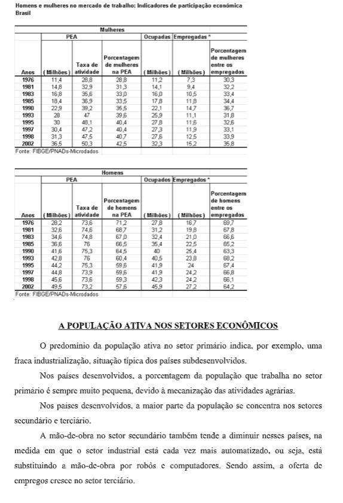

Capítulo 4: Relevo
Questão:Como é possível compreender a ocupação dos territórios pela humanidade a partir da observação das características naturais que a superfície terrestre apresenta?
O que é relevo?
Assista ao vídeo abaixo e compare as informações entre o que ele traz e as imagens presentes nesse capítulo.
O relevo consiste nas formas da superfície do planeta, podendo ser influenciado por agentes internos e externos.
Em termos mais simples, é a modelagem da crosta terrestre. Seus termos relacionados referem-se às diferenças, tanto de forma como de altitude, em relação ao nível do mar. Esses termos também estão relacionados com sua constituição, origem, estágio, idade, e assim por diante.
Tipos de relevoOs tipos de relevo são os aspectos da superfície do globo terrestre. A constituição das diferentes formas de relevo se deve à ação dos agentes internos ou endógenos - que acentuam o relevo - e também dos agentes externos ou exógenos - que atenuam e esculpem o relevo. O relevo pode apresentar diversas formas. As principais são: cadeias de montanhas, serras, planaltos, planícies e depressões.
MontanhasSão elevações do terreno, geralmente formadas por agrupamentos de morros. Em sua maioria, são formadas por agentes internos. Entretanto, existem montanhas que, por serem muito antigas, não estão mais em processos de construção, e sim de erosão. Questão: Como é possível compreender a ocupação dos territórios pela humanidade a partir da observação das características naturais que a superfície terrestre apresenta? Podem apresentar consideráveis altitudes, relevo acidentado e a formação de vales. Estão ligadas a planaltos que sofreram falhamentos.
 Serra
Serra
São relevos alongados com topos irregulares, às vezes isolados. São alinhamentos de montanhas antigas que sofrem um processo acentuado de erosão, e que mais tarde sofrem um processo de falhamento.
 Planalto
Planalto
Superfícies elevadas, com ondulações suaves, destacando-se em relação às áreas limítrofes. São normalmente delimitados por escarpas. A principal característica de um planalto é que o processo de erosão supera o de sedimentação. Os planaltos típicos são de estrutura sedimentar, podendo ser formados também pela elevação de blocos magmáticos.

Planícies
Superfícies planas, de baixas altitudes, sendo que a principal característica é justamente a contrária dos planaltos: o processo de sedimentação supera o de erosão. Podem ser caracterizadas de acordo com o agente responsável por sua formação: planície costeira ou marinha, fluvial, lacustre e glacial.
 Depressões
Depressões
São áreas rebaixadas em relação aos relevos circundantes. Sua origem pode estar ligada a processos de erosão ou de afundamentos provocados por falhamentos.
 Outros tipos de relevos
Outros tipos de relevos